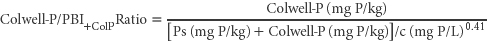

The ratio of Colwell-P/PBI+ColP, i.e. Method 9B/9I2 provides an approximate alternative to Method 9K1 for laboratories that perform Method 9B and 9I2 but not the multi-element Mehlich 3 test (18F1 and perhaps 18F2). Interpretative guidance is provided in 9K.

Report Colwell-P/PBI+ColP Ratio (air-dry)